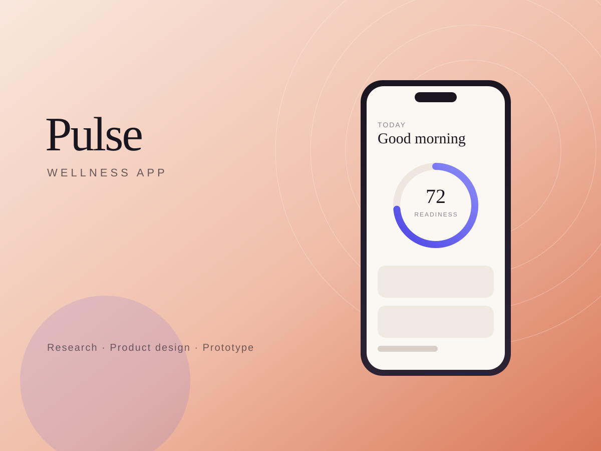

Distributed Systems · Data Engineering · 2025
Pulse: High-Throughput Streaming Feature Store
A distributed streaming feature store ingesting 1.8B events/day with Apache Spark & Kafka, achieving p99 retrieval latency under 4ms.
- Role
- Principal Data Engineer
- Timeline
- 10 weeks
- Year
- 2025
- Disciplines
- Distributed Systems, Data Engineering

Unified Feature Ingestion
Data science teams frequently re-implement the same features in both SQL for offline training and Python microservices for online serving. Pulse provides a unified declarative feature repository where transforms are defined once and compiled into both streaming Kafka jobs and batch Spark pipelines.
The architecture ingests over 1.8 billion daily interactions, materializing real-time aggregates into an in-memory key-value tier while streaming raw Parquet files into a partitioned lakehouse.
Point-in-Time Correctness
Feature leakage is the most pervasive cause of failed ML deployments. Pulse implements an as-of join engine in PySpark that reconstructs the exact state of entity features at any historical timestamp.
Data scientists can run training dataset generation across terabytes of historical logs without risking future information contamination.